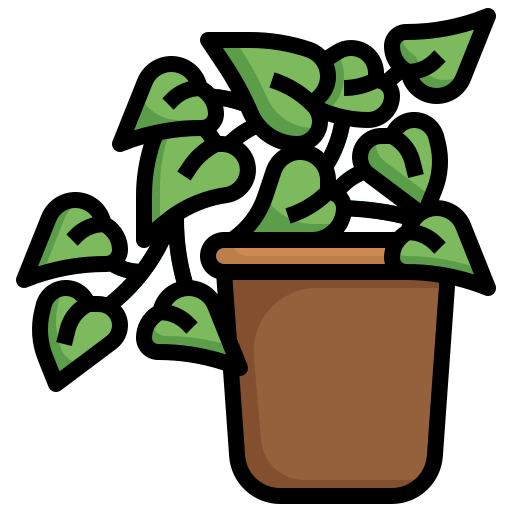

Bonsai
Descubre destinos tipos de arboles, diferentes edades, estilos,especies y tamaños
<<<<<<< HEAD ======= >>>>>>> 3277c51392410a9fdb12e6f7919ef11c6e3514bd
>>>>>>> 3277c51392410a9fdb12e6f7919ef11c6e3514bd

Bienvenidos al mundo del bonsái! En esta página, descubrirás el arte y la pasión de cultivar árboles en miniatura. El bonsái es una tradición antigua que combina la naturaleza, el arte y la paciencia. Aquí encontrarás: Información sobre los diferentes estilos y técnicas de bonsái Consejos prácticos para cuidar tus árboles Noticias y eventos del mundo del bonsái Ya sea que seas un principiante o un experto, esperamos que disfrutes de esta página y te sumes a nuestra comunidad de apasionados del bonsái.
Descubre destinos tipos de arboles, diferentes edades, estilos,especies y tamaños
<<<<<<< HEAD =======
>>>>>>> 3277c51392410a9fdb12e6f7919ef11c6e3514bd
Nuestras macetas están diseñadas para brindar a tus plantas el cuidado y la atención que merecen.
En nuestra tienda encontrará las herramientas más variadas y de alta calidad para satisfacer todas sus necesidades
¡Aprende el arte del bonsái con nuestros expertos consejos!
D¡Servicio de domicilios confiable y eficiente!

Material hecho de material de cerámica duradero y cocido a altas temperaturas lo que no es fácil de daar. Cada maceta para suculentas está hecha a mano el color puede variar es normal
Esta es una composición legendaria muy conocida en los círculos de Bonsái como: “Protector del Espíritu”. Tiene una larga historia y representa a los nietos del creador.
Los hermosos arces japoneses se han convertido en uno de los motivos más conocidos de la cultura nipona. La especie más venerada, el “acer palmatum”, simboliza la paz, la longevidad y la prosperidad.

Visitas totales al blog

Paginas vistas por mes

seguidores de instagram

seguidores facebook

seguidores twitter